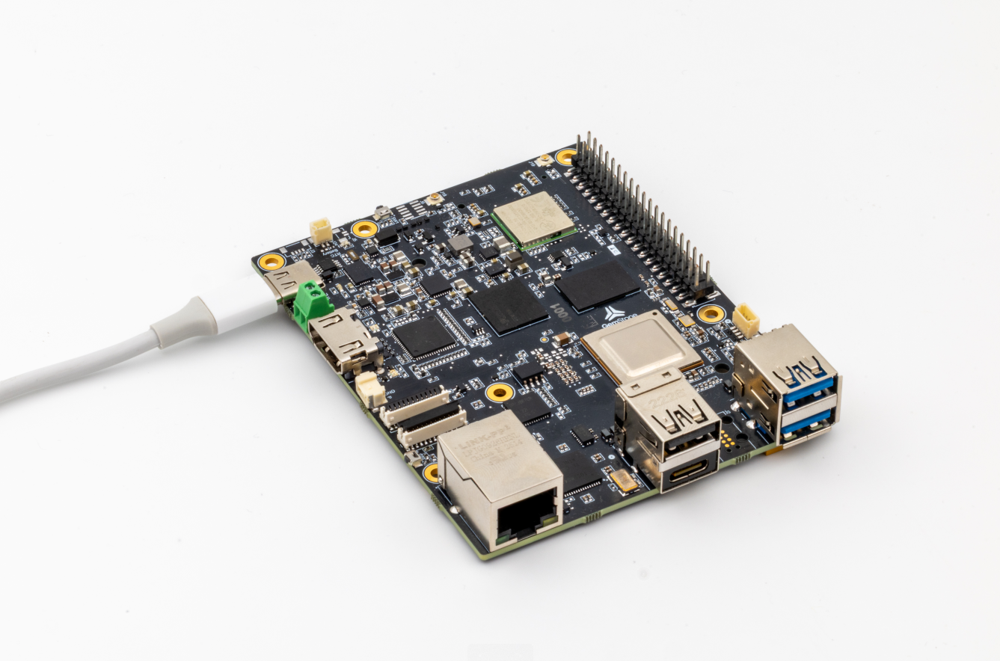
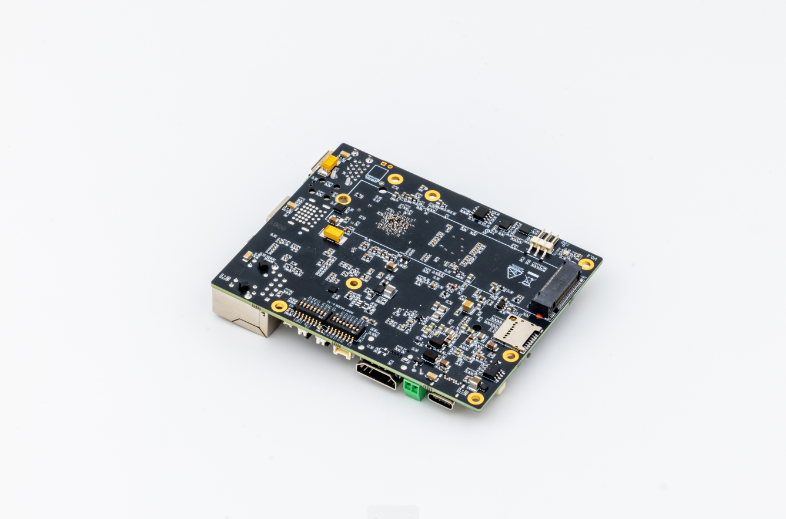

T3 Gemstone O1
 T3 Gemstone O1 board layout - front |
 T3 Gemstone O1 board layout - back |
This page presents T3 Gemstone O1 – High-performance development board based on Texas Instruments AM67A processor, which runs NuttX on main domain Cortex-R5F core.
Features
- Processor (TI AM67A)
Quad-core 64-bit ARM Cortex-A53 @1.4 GHz for running high-level operating systems such as Linux
Dual single-core ARM Cortex-R5F @800 MHz for running real-time MCU applications
Dual 2 TOPS (4 TOPS total) deep learning accelerators for running vision applications
Advanced 50 GFLOPS GPU for high-performance graphics processing
4GB LPDDR4 RAM
- Sensors
InvenSense ICM-20948 IMU (accel, gyro, compass)
Bosch BMP390 barometer
TI HDC2010 humidity and temperature
Storage
- On-board
32GB eMMC flash
512Kbit EEPROM
- Expandable
microSD card slot
M.2 2280 SSD port
- Network Connections
1x Gigabit ethernet
1x CAN bus
Wi-Fi 4 (802.11n)
Bluetooth 5.1, Bluetooth Low Energy (BLE)
- Power
USB Type-C power (5-9V / 3A)
DC power connector (5-12V / 5A)
- Interfaces
UART, I2C and SPI for extensions
S.Bus input
7x PWM servo outputs
Green-red status leds
Real-time clock
Fan with PWM speed control
4x USB ports
2x 4-lane MIPI CSI/DSI
1x HDMI
Warning
This board currently only supports a basic implementation of NuttX with only UART console as a supported peripheral. Please see the contributing documentation if you would like to help contribute to the support.
Serial console
The serial console is provided on UART-MAIN1, which is available on the 40-pin HAT:
UART-MAIN1 TX: GPIO-14
UART-MAIN1 RX: GPIO-15
Installation
The arm‑none‑eabi‑gcc toolchain can compile NuttX for R5F cores.
You can obtain a compatible toolchain for your operating system directly from
the official ARM website.
If you’re running a Debian‑based Linux distribution, you can also install the toolchain via your package manager:
$ sudo apt-get update
$ sudo apt-get -y install gcc-arm-none-eabi
Flashing
The board does not provide flash storage for the R5F firmware, so NuttX must be loaded onto the R5F cores through the RemoteProc framework from either U‑Boot or Linux. While the A53 cores run Linux, the R5F cores execute the NuttX operating system.
To load code onto the R5F cores, place the compiled binaries in the
/lib/firmware directory, using the filenames expected by RemoteProc.
During boot, RemoteProc will automatically detect these files and launch the
corresponding programs on the appropriate cores.
Follow the steps below to start NuttX on the main‑domain R5F core via RemoteProc.
Copy the
nuttxfile resulting from the compilation to the/lib/firmwaredirectory with the namej722s-main-r5f0_0-fw.Reboot the board.
You can access NuttShell by connecting a USB-to-TTL device to the UART-MAIN1’s TX (GPIO-14) and RX (GPIO-15) pins on the 40-pin HAT.
$ picocom -b 115200 /dev/ttyACM0
NuttShell (NSH) NuttX-12.11.0
nsh> cat proc/version
NuttX version 12.11.0 8bdbb8c7d5-dirty Oct 22 2025 14:15:42 t3-gem-o1:nsh
nsh>
Configurations
All of the configurations that can be used with t3-gem-o1 board name are
listed below. For example you can select nsh configuration with the
following command:
$ ./tools/configure.sh t3-gem-o1:nsh
nsh
Configures the NuttShell (nsh) located at examples/nsh. This configuration enables a serial console on UART-MAIN1.